Bunga ng Kilusang Panlipunan – Himagsikan sa Pagsulong ng Kamalayang Pilipino
Kilusang panlipunan -
Ito ay sama-samang pagkilos ng mga tao upang makamit ang pagbabago sa lipunan.
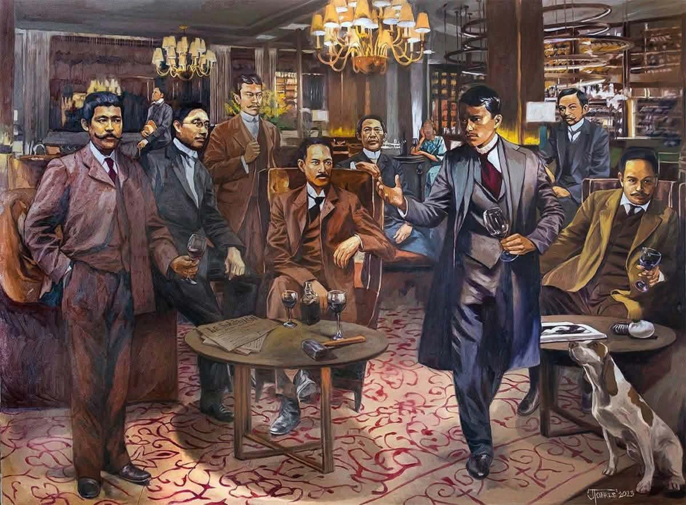
Himagsikan -
Ito ay malawakang pag-aalsa o pakikibaka laban sa isang umiiral na kapangyarihan o pamahalaan upang makamit ang malaking pagbabago.
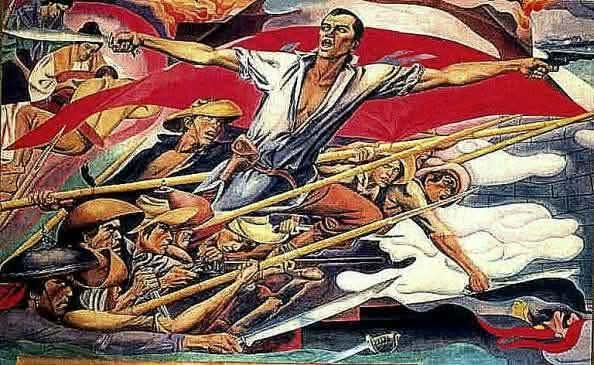
Kamalayang Pilipino -
Ito ay ang pag-unawa ng mga Pilipino sa kanilang pagkakakilanlan, karapatan, pagkakaisa, at kakayahang mamahala sa sariling bayan.
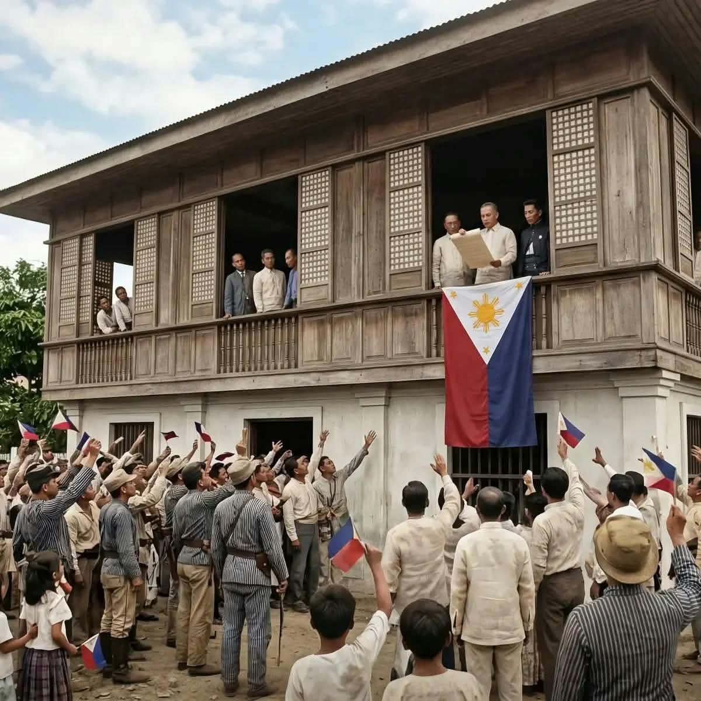
"Kalagayan ng Pilipinas bago ang himagsikan"
Pamamahala ng mga Espanyol
Sa loob ng mahigit tatlong siglo, ang Pilipinas ay nasa ilalim ng pamamahala ng Espanya. Maraming Pilipino ang nakaranas ng hindi pantay na pagtrato at limitadong pagkakataong makilahok sa pamahalaan.
Ilan sa mga suliranin noon :
- Hindi pantay na pagtrato. Nagkaroon ng pagkakaiba sa katayuan at pribilehiyo ng mga tao batay sa kanilang pinagmulan at posisyon sa lipunan.
- Pang-aabuso sa kapangyarihan. May mga opisyal at prayleng inakusahan ng pang-aabuso at kawalan ng katarungan.
- Limitadong kalayaan sa pagpapahayag. Ang mga kritiko ng pamahalaang kolonyal ay maaaring usigin, ikulong, o ipatapon.
- Pasaning pang-ekonomiya. Ang mga buwis, sapilitang paggawa sa ilang sistema, at iba pang obligasyon ay nagpahirap sa maraming mamamayan.
- Kawalan ng sapat na representasyon. Maraming Pilipino ang nagnanais ng mas malaking papel sa paggawa ng mga batas at pagpapasya para sa bansa.
"Ang pag-usbong ng mga ilustrado"
Ang mga ilustrado ay mga edukadong Pilipino, kabilang ang mga nakapag-aral sa Europa, na naging aktibo sa pagsusulong ng reporma at karapatan ng mga Pilipino.
Sa pamamagitan ng pagsusulat, talumpati, at paglalathala, inilantad nila ang mga suliranin ng lipunan. Nakatulong ang kanilang mga ideya upang maunawaan ng mas maraming Pilipino na kailangang baguhin ang mapang-abusong sistema ng pamamahala.
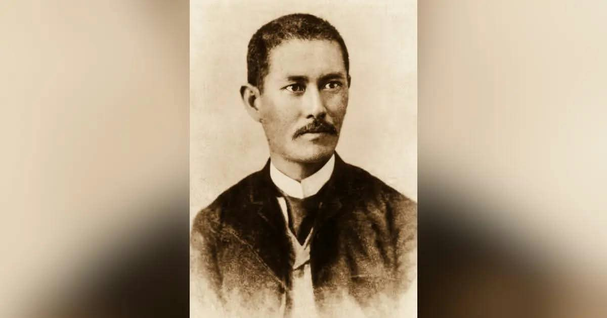
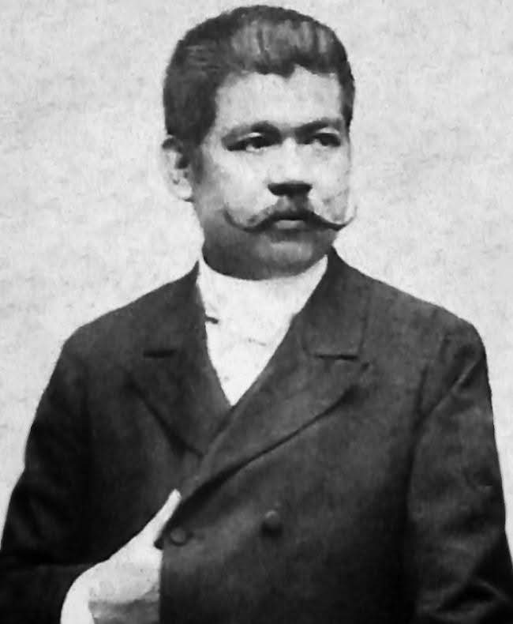
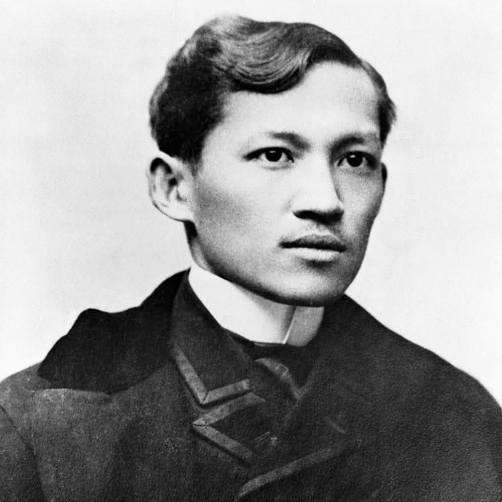
"Ang Pagbitay sa GOMBURZA noong 1872"
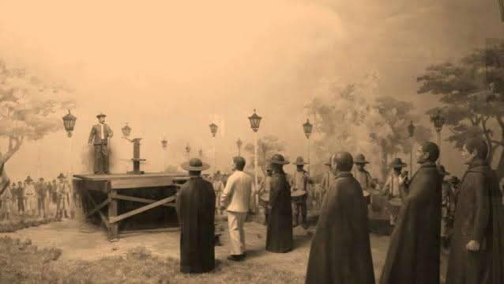
Noong Pebrero 17, 1872, binitay sa pamamagitan ng garote ang tatlong paring Pilipino na sina:
- Mariano Gomes (Gomez) – isa sa mga paring nagsusulong ng karapatan ng mga paring sekular.
- José Burgos – kilala sa pagtatanggol sa kakayahan at karapatan ng mga paring Pilipino.
- Jacinto Zamora – kapwa paring sekular na nahatulan kaugnay ng mga pangyayaring sumunod sa Cavite Mutiny.
Kilala silang magkakasama bilang GOMBURZA.
Nangyari ang kanilang pagbitay matapos ang Cavite Mutiny noong Enero 1872. Inakusahan silang sangkot sa paghihimagsik, ngunit ang paglilitis at pagbitay sa kanila ay naging sagisag ng kawalan ng katarungan sa ilalim ng pamahalaang kolonyal.
Bakit mahalaga ang GOMBURZA?
Ang kanilang pagkamatay ay nagpalalim sa pagnanais ng mga Pilipino na makamit ang katarungan. Naging mahalagang impluwensiya rin sila kay José Rizal, na nag-alay ng kaniyang nobelang El Filibusterismo sa kanilang alaala.
"Ang Kilusang Propaganda"
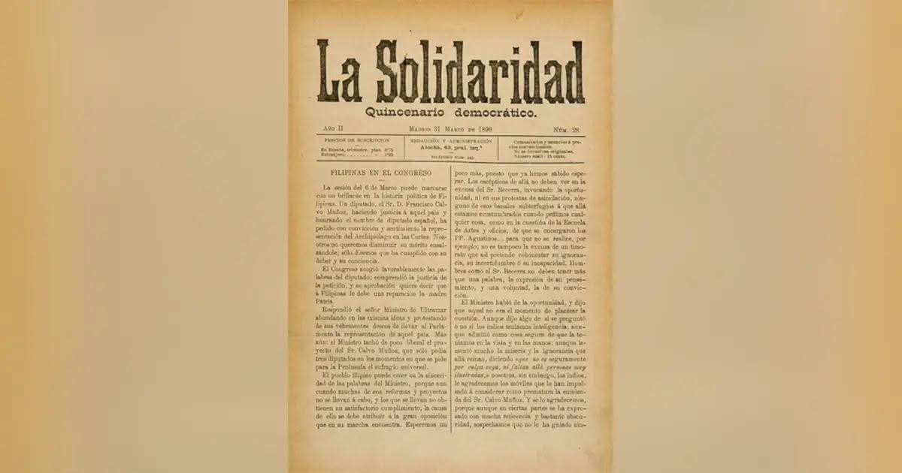
Ang Kilusang Propaganda ay isang kilusan ng mga Pilipinong repormista na naging aktibo lalo na noong dekada 1880 hanggang kalagitnaan ng dekada 1890. Pangunahing layunin nitong makamit ang mga pagbabago sa mapayapang paraan, sa pamamagitan ng pagsusulat at panghihikayat.
Hindi pa ganap na kalayaan ang pangunahing hinihingi ng karamihan sa mga repormista sa simula, nais muna nilang makamit ang pantay na karapatan at pagbabago sa pamamahala.
Mga pangunahing layunin
- Pagkakapantay-pantay ng mga Pilipino at Espanyol sa ilalim ng batas.
- Pagkakaroon ng representasyon ng Pilipinas sa Cortes Generales ng Espanya.
- Pagpapabuti sa sistema ng edukasyon.
- Pagpigil sa pang-aabuso ng mga opisyal at prayle.
- Pagpapalawak ng kalayaan sa pamamahayag at pagpapahayag.
- Pagkilala sa karapatan ng mga Pilipino at sa kakayahan ng mga paring Pilipino.
"Mga pangunahing personalidad"
1. Dr. José Rizal (1861–1896)
Isang doktor, manunulat, at repormista. Isinulat niya ang Noli Me Tangere at El Filibusterismo, na naglantad sa mga suliranin at pang-aabuso sa lipunang kolonyal.
Nagtatag siya ng La Liga Filipina noong 1892. Isinulong niya ang reporma at pambansang pagkakaisa, ngunit hindi niya sinuportahan ang agarang armadong himagsikan nang kausapin siya ni Pio Valenzuela noong 1896.
2. Marcelo H. del Pilar (1850–1896)
Isang manunulat at repormista na gumamit ng mga sanaysay at pamamahayag upang tuligsain ang pang-aabuso ng mga prayle. Naging mahalagang patnugot siya ng La Solidaridad.
3. Graciano López Jaena (1856–1896)
Isang mahusay na mananalumpati at manunulat. Itinatag niya ang pahayagang La Solidaridad noong 1889, na nagsilbing daluyan ng mga panawagan para sa reporma.
4. Mariano Ponce (1863–1918)
Isang manunulat at propagandista na tumulong sa pagpapalaganap ng mga ideya ng kilusan. Naging bahagi rin siya ng pamamahala at pagsusulat para sa La Solidaridad.
5. Antonio Luna (1866–1899)
Isang manunulat, propagandista, at kalauna'y pinunong militar. Nakilahok siya sa pagsusulat at pagpapalaganap ng mga ideya ng reporma bago naging mahalagang heneral sa pakikibaka para sa kalayaan.
"Ang mga akda at publikasyon"
- Noli Me Tangere (1887) – Inilantad ang mga suliranin, katiwalian, at pang-aabuso sa lipunan.
- El Filibusterismo (1891) – Nagpakita ng mas madilim na larawan ng pang-aapi at kawalan ng katarungan.
- La Solidaridad (1889–1895) – Pahayagang nagpalaganap ng mga ideya at panawagan ng mga repormista.
- Mga sanaysay ni Marcelo H. del Pilar – Tumuligsa sa pang-aabuso at nagtaguyod ng mga reporma.
Bakit hindi nagtagumpay ang Kilusang Propaganda?
Sa kabila ng kanilang mga pagsisikap, hindi naibigay ng pamahalaang Espanyol ang mga pangunahing repormang hinihingi ng mga Pilipino. Nahirapan din ang kilusan dahil sa kakulangan ng pondo, pagkakaiba ng pananaw ng mga kasapi, at pagtutol ng mga makapangyarihang sektor.
Dahil dito, may mga Pilipinong naniwalang hindi sapat ang pagsusulat at mapayapang paghingi ng pagbabago. Unti-unting lumakas ang panawagan para sa ganap na kalayaan.
"La Liga Filipina at ang pagkakatatag ng Katipunan"
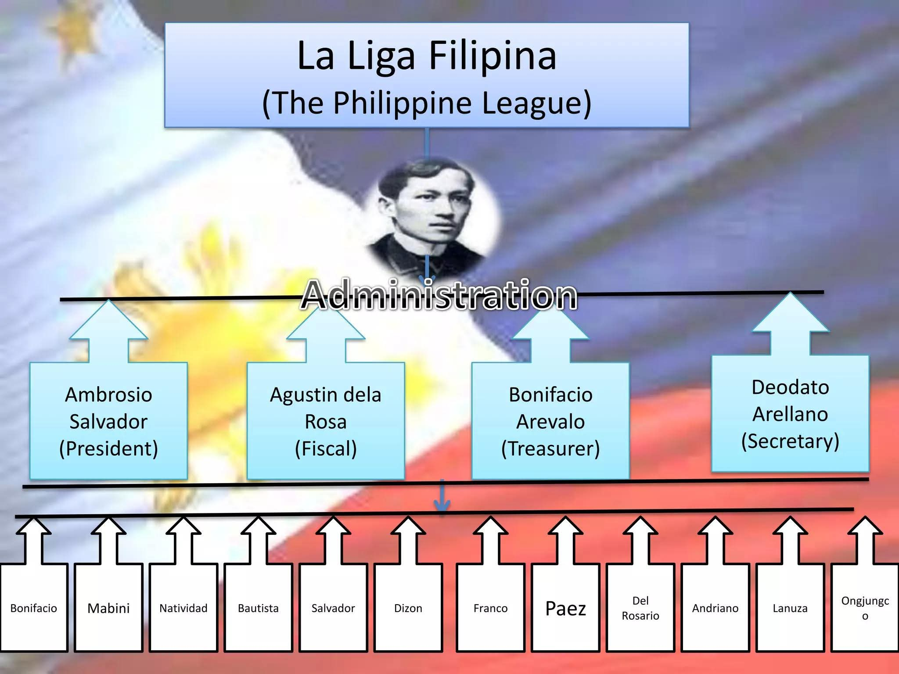
Itinatag ni José Rizal ang La Liga Filipina sa Tondo, Maynila, noong Hulyo 3, 1892.
Layunin nitong:
- Pagkaisahin ang mga Pilipino.
- Magbigay ng tulong sa mga kasapi.
- Isulong ang edukasyon, agrikultura, at kalakalan.
- Itaguyod ang mga reporma sa mapayapang paraan.
- Ipaglaban ang mga karapatan ng mamamayan.
Ilang araw matapos itong itatag, inaresto si Rizal at ipinatapon sa Dapitan. Humina ang organisasyon at nagkaroon ng pagkakahati sa mga kasapi tungkol sa mga susunod na hakbang.
"Ang Katipunan"
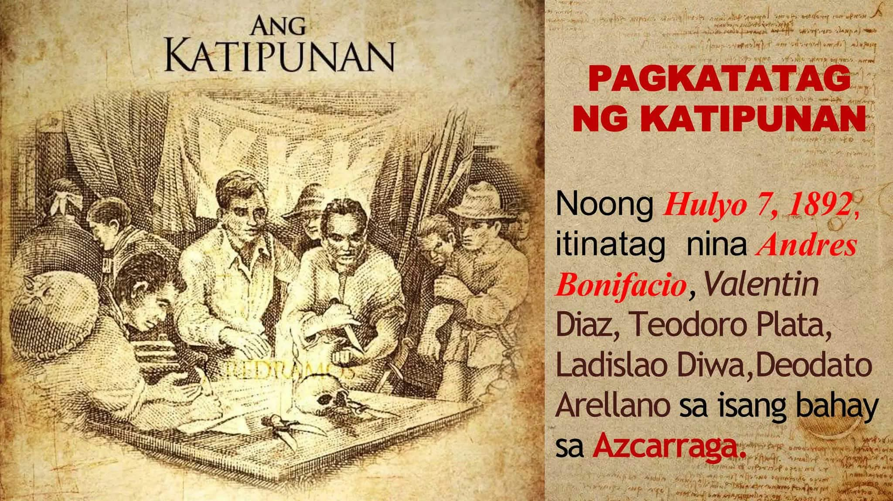
Noong Hulyo 7, 1892, itinatag ang Kataastaasan, Kagalanggalangang Katipunan ng mga Anak ng Bayan (KKK), na karaniwang tinatawag na Katipunan.
Isa itong lihim na samahang naglalayong makamit ang kalayaan ng Pilipinas mula sa Espanya sa pamamagitan ng rebolusyon.
Mga kinikilalang unang nagtatag nito:
- Andrés Bonifacio – pangunahing pinuno at unang Supremo ng Katipunan.
- Deodato Arellano – unang pangulo ng Kataas-taasang Sanggunian.
- Ladislao Diwa – isa sa mga unang kasapi at tagapagtatag.
- Teodoro Plata – isa sa mga unang kasapi at tagapagtatag.
- Valentín Díaz – isa sa mga unang kasapi at tagapagtatag.
- José Dizon – isa sa mga unang kasapi at tagapagtatag.
Mga layunin at paraan ng Katipunan :
- Makamit ang kalayaan ng Pilipinas mula sa Espanya.
- Pagkaisahin ang mga Pilipino sa iisang layunin.
- Itaguyod ang pagkakapantay-pantay at paggalang sa kapwa.
- Palaganapin ang pagmamahal sa bayan.
- Ihanda ang mga kasapi para sa rebolusyon.
Mga dokumento at sagisag ng Katipunan :
- Kartilya ng Katipunan – isinulat ni Emilio Jacinto at naglalaman ng mga aral tungkol sa dangal, pagkakapantay-pantay, at wastong asal.
- Kalayaan – opisyal na pahayagan ng Katipunan na tumulong sa pagpapalaganap ng mga ideya nito.
- Andres Bonifacio – tinaguriang Ama ng Himagsikang Pilipino at pangunahing pinuno ng Katipunan.
- Emilio Jacinto – kilala bilang Utak ng Katipunan dahil sa kaniyang mga kaisipan at mga isinulat.
- Gregoria de Jesus – kilala bilang Lakambini ng Katipunan; tumulong sa pag-iingat ng mga dokumento at iba pang gawain ng samahan.
"Mga mahahalagang personalidad sa Himagsikang Pilipino"
1. Andrés Bonifacio (1863–1897)
Pangunahing pinuno ng Katipunan at isa sa mga pangunahing nagpasimula ng himagsikan noong 1896. Naniniwala siyang dapat makamit ang kalayaan sa pamamagitan ng rebolusyon.
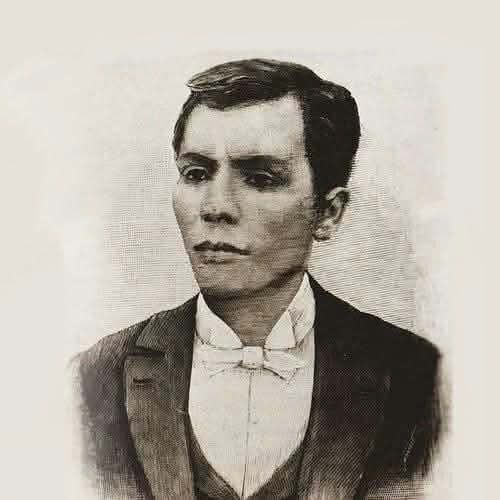
2. Emilio Aguinaldo (1869–1964)
Isang pinunong rebolusyonaryo mula sa Cavite. Nahalal siyang pangulo ng pamahalaang rebolusyonaryo sa Tejeros Convention noong 1897 at nanguna sa deklarasyon ng kalayaan noong Hunyo 12, 1898.
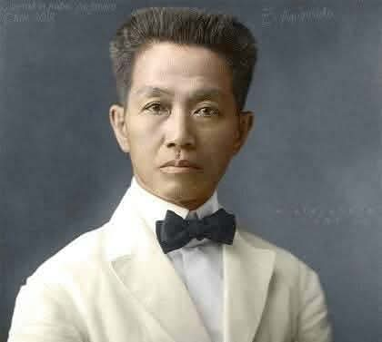
3. Emilio Jacinto (1875–1899)
Kilala bilang Utak ng Katipunan. Isinulat niya ang Kartilya ng Katipunan, na nagbigay-diin sa moralidad, dangal, at pagkakapantay-pantay.
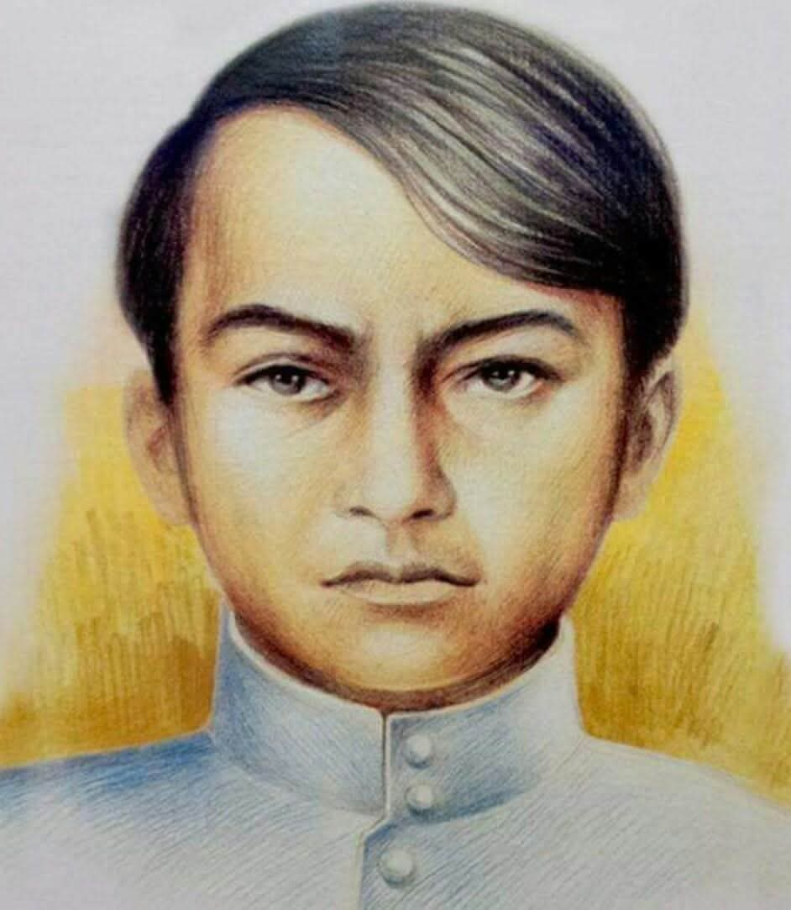
4. Gregoria de Jesus (1875–1943)
Tinaguriang Lakambini ng Katipunan. Tumulong siya sa pagtatago at pag-iingat ng mga dokumento at sa pagpapanatili ng mga lihim ng samahan.
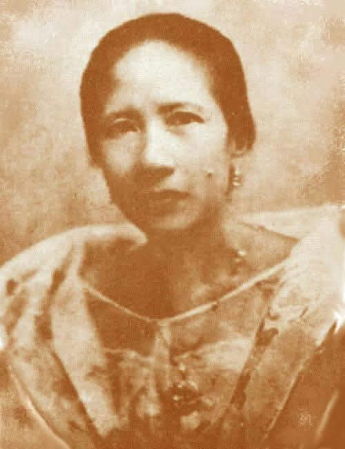
5. Melchora Aquino (1812–1919)
Kilala bilang Tandang Sora. Nagbigay siya ng pagkain, kanlungan, at tulong sa mga Katipunero. Naging mahalaga ang kaniyang suporta sa mga rebolusyonaryo.
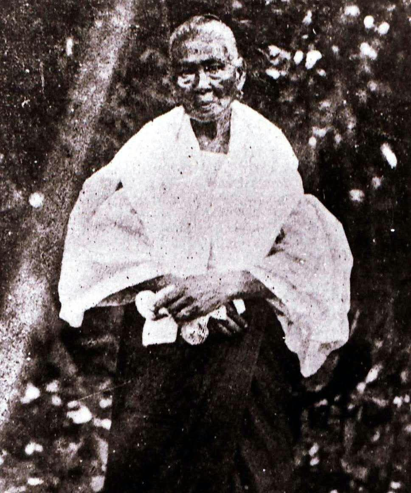
6. Apolinario Mabini (1864–1903)
Isang abogado at palaisip na naging mahalagang tagapayo ni Aguinaldo. Malaki ang naging ambag niya sa paghubog ng pamahalaang rebolusyonaryo at sa mga prinsipyong pampolitika nito.
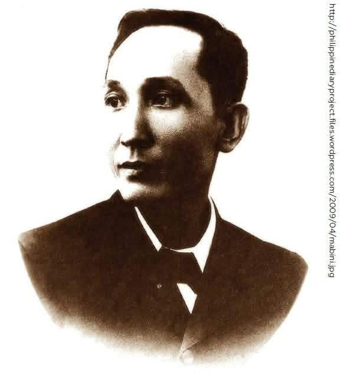
7. Pio Valenzuela (1869–1956)
Isang doktor at kasapi ng Katipunan. Ipinadala siya upang kausapin si Rizal sa Dapitan noong 1896 tungkol sa planong himagsikan.
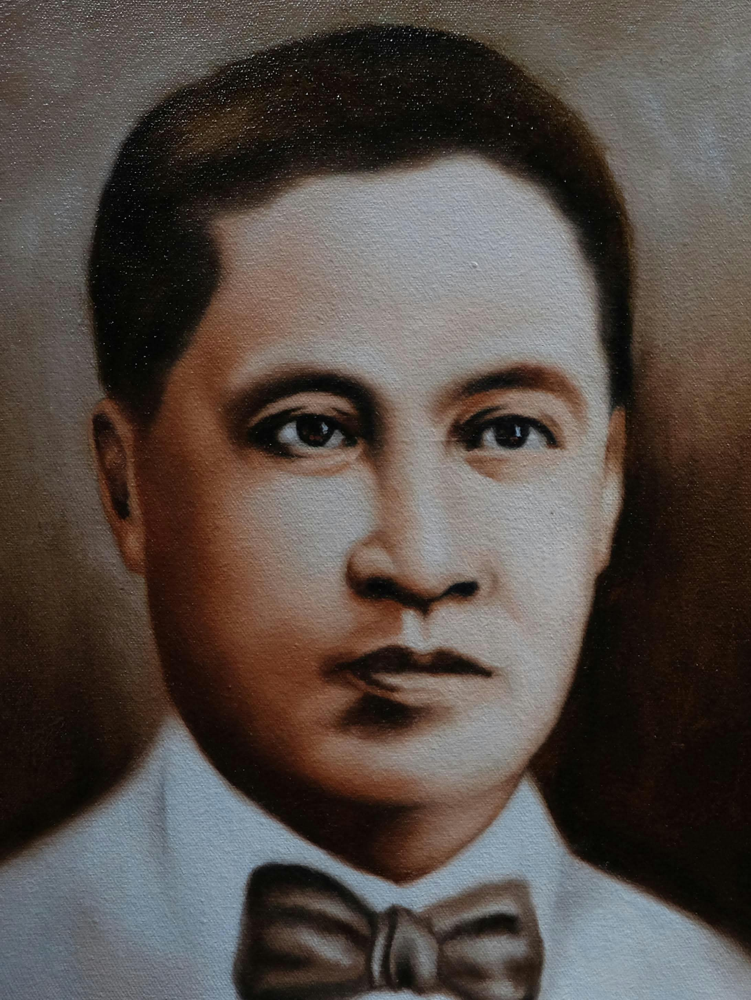
8. Agueda Kahabagan
Isang babaeng rebolusyonaryo mula sa Laguna. Nakilala siya sa aktibong pakikilahok sa pakikibaka at kabilang sa mga babaeng kinilala sa mga puwersang rebolusyonaryo.
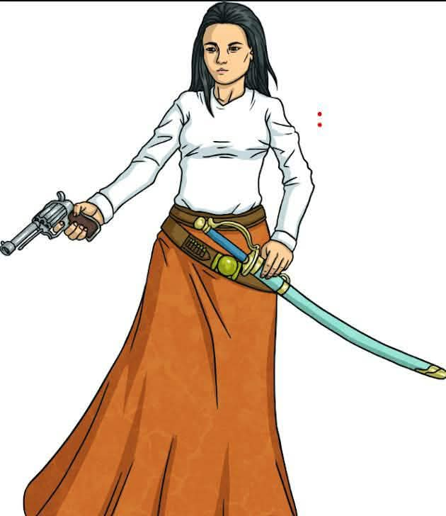
"Ang pagsiklab ng Himagsikang Pilipino noong 1896"
Pagkakatuklas sa Katipunan :
Noong Agosto 1896, natuklasan ng mga awtoridad ng Espanya ang lihim na samahan ng Katipunan. Nagkaroon ng pag-aresto at pag-uusig sa mga pinaghinalaang kasapi.
Dahil nanganganib ang organisasyon, nagpasya ang mga Katipunero na simulan ang malawakang pag-aalsa sa halip na ipagpatuloy lamang ang kanilang lihim na paghahanda.
"Sigaw ng Pugad Lawin"
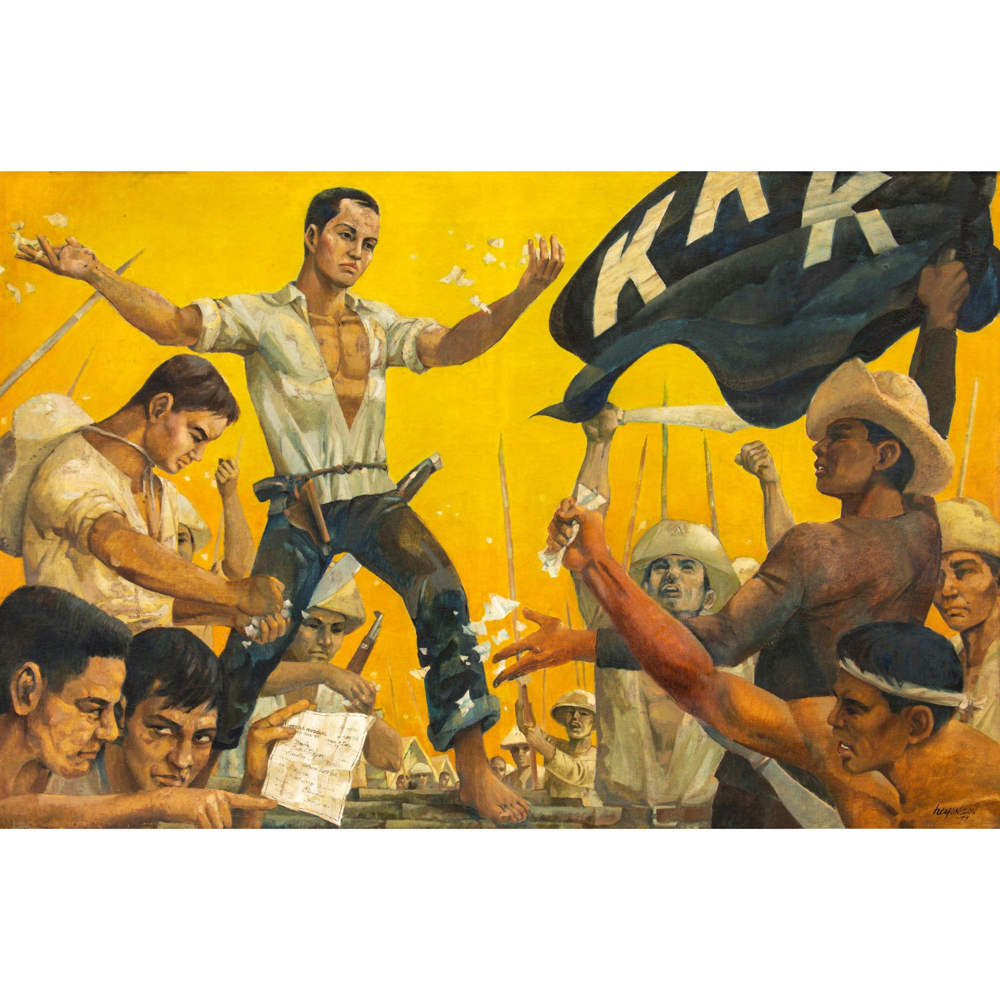
Noong Agosto 23, 1896, nagtipon sina Andrés Bonifacio at mga Katipunero sa Pugad Lawin, na matatagpuan sa kasalukuyang Quezon City ayon sa kinikilalang makasaysayang pook.
Pinunit nila ang kanilang mga sedula bilang simbolo ng pagtanggi sa kapangyarihan ng pamahalaang kolonyal at ng kanilang kahandaang lumaban para sa kalayaan.
Bakit mahalaga ang Sigaw ng Pugad Lawin?
- Ipinakita nito ang hayagang pagtutol sa pamahalaang Espanyol.
- Nagsilbi itong sagisag ng pagsisimula ng malawakang himagsikan.
- Pinatunayan nito na may mga Pilipinong handang magsakripisyo para sa kalayaan.
"Ang pagkamatay ni José Rizal"
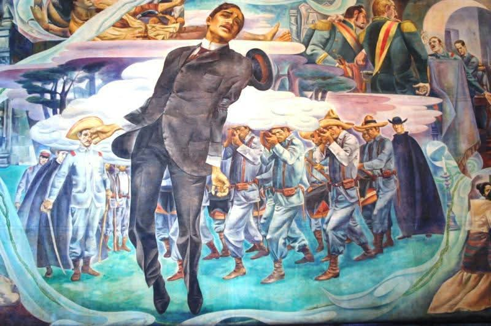
Noong Disyembre 30, 1896, binitay si José Rizal sa Bagumbayan, na kilala ngayon bilang Rizal Park sa Maynila.
Bagaman hindi siya tagapagtaguyod ng agarang armadong himagsikan, naging makapangyarihan ang kaniyang mga akda at ang kaniyang pagkamatay sa paghubog ng nasyonalismong Pilipino.
Maraming Pilipino ang nakakita sa kaniya bilang sagisag ng sakripisyo, katarungan, at pagmamahal sa bayan.
Tejeros Convention — Marso 22, 1897
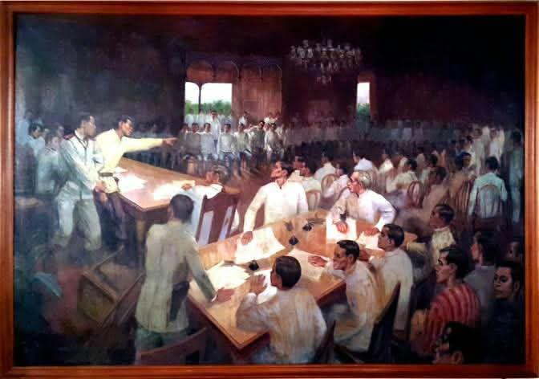
Nagtipon ang mga pinunong rebolusyonaryo sa Tejeros, Cavite, upang pag-usapan ang pamamahala at pamumuno sa himagsikan.
Mga pangunahing pangyayari:
- Nahalal si Emilio Aguinaldo bilang pangulo ng pamahalaang rebolusyonaryo.
- Nahalal si Mariano Trías bilang pangalawang pangulo.
- Nagkaroon ng alitan sa pagitan ng mga pangkat at pinunong rebolusyonaryo.
- Tinanggihan ni Bonifacio ang bisa ng halalan matapos ang mga pagtatalo at paghamak sa kaniyang kakayahan.
Ang Tejeros Convention ay mahalagang halimbawa ng mga hamong kinaharap ng himagsikan: bukod sa pakikipaglaban sa Espanya, kailangan ding lutasin ng mga Pilipino ang kanilang mga hindi pagkakasundo sa pamumuno.
Pagkamatay ni Andrés Bonifacio — 1897
Matapos ang alitan sa pamumuno, inaresto si Bonifacio at ang kaniyang kapatid na si Procopio. Nilitis sila ng pamahalaang rebolusyonaryo at hinatulan ng kamatayan.
Noong Mayo 10, 1897, pinatay ang magkapatid sa kabundukan ng Maragondon, Cavite.
"Mula sa Biak-na-Bato hanggang sa deklarasyon ng kalayaan"
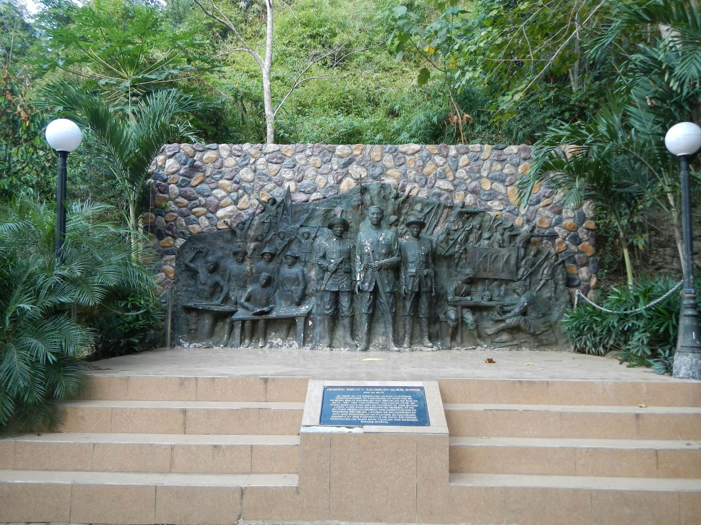
Kasunduan sa Biak-na-Bato — Disyembre 1897
Sa pagpapatuloy ng digmaan, nagkaroon ng kasunduan sa pagitan ng mga rebolusyonaryo at ng pamahalaang Espanyol.
Sa ilalim ng Kasunduan sa Biak-na-Bato:
- Pumayag si Emilio Aguinaldo at ilang kasamang rebolusyonaryo na magtungo sa Hong Kong.
- Nangako ang panig ng Espanya ng mga reporma at kabayaran.
- Pansamantalang humina ang labanan sa ilang lugar.
Gayunman, hindi nito tuluyang nalutas ang mga suliranin. Hindi nakamit ang mga inaasahang pagbabago, at nagpatuloy ang pakikibaka sa sumunod na taon.
Pagbabalik ni Aguinaldo at pagpapatuloy ng rebolusyon — 1898
Noong 1898, nagkaroon ng digmaan sa pagitan ng Espanya at Estados Unidos. Bumalik si Aguinaldo sa Pilipinas at ipinagpatuloy ng mga rebolusyonaryo ang kanilang pakikibaka laban sa Espanya.
Deklarasyon ng Kalayaan at Unang Republika
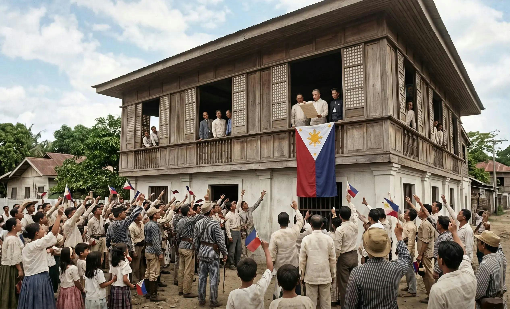
Deklarasyon ng Kalayaan — Hunyo 12, 1898
Noong Hunyo 12, 1898, ipinahayag ni Emilio Aguinaldo ang kalayaan ng Pilipinas sa Kawit, Cavite.
Ito ay isang mahalagang bunga ng mahabang pakikibaka ng mga Pilipino dahil ipinahayag nila sa publiko ang kanilang karapatang maging isang malayang bansa.
Unang Republika ng Pilipinas — Enero 23, 1899
Noong Enero 23, 1899, pinasinayaan ang Unang Republika ng Pilipinas sa Malolos, Bulacan, sa pamumuno ni Emilio Aguinaldo.
Ipinakita nito na ang layunin ng mga rebolusyonaryo ay hindi lamang alisin ang pamamahalang Espanyol, kundi bumuo rin ng sariling pamahalaan at mga institusyon.
Gayunman, hindi agad nakamit ang ganap na pagkilala sa kalayaan. Nagsimula ang Digmaang Pilipino-Amerikano noong Pebrero 4, 1899, at nagpatuloy ang pakikibaka laban sa bagong kapangyarihang kolonyal.
"Mga bunga ng Kilusang Panlipunan at Himagsikan sa Pagsulong ng Kamalayang Pilipino"
1. Pag-usbong ng nasyonalismong Pilipino
Bunga: Lumakas ang pagnanais na ipagtanggol ang karapatan at kinabukasan ng buong bansa.
2. Pagkakaisa ng mga Pilipino
Bunga: Naging mas malinaw ang ideya na ang kalayaan ay hindi lamang para sa isang tao o pangkat kundi para sa buong bayan.
3. Pagkamulat sa mga karapatan
Bunga: Mas maraming Pilipino ang nagkaroon ng dahilan upang kuwestiyunin ang pang-aabuso at humiling ng makatarungang pamamahala.
4. Pag-usbong ng mga Pilipinong pinuno
Bunga: Napatunayan na ang mga Pilipino ay may kakayahang mag-organisa, magtakda ng layunin, mamuno, at bumuo ng mga institusyon para sa kanilang bayan.
5. Pag-unlad ng panitikan at kamalayang panlipunan
Bunga: Naging paraan ang panitikan upang mamulat ang mga tao, maipahayag ang kanilang saloobin, at maipalaganap ang mga ideya ng reporma at kalayaan.
6. Pagkilala sa mahalagang papel ng kababaihan at karaniwang mamamayan
Bunga: Ipinakita ng himagsikan na ang pagbabago ay nangangailangan ng ambag ng maraming sektor ng lipunan, hindi lamang ng iilang makapangyarihang tao.
7. Pagpapatuloy ng pakikibaka para sa ganap na kasarinlan
Bunga: Naging mas malalim ang pag-unawa na ang pagiging malaya ay hindi lamang pagkakaroon ng sariling watawat o pamahalaan; mahalaga rin ang kakayahang magpasya para sa kinabukasan ng bansa.
Talahanayan ng mga Makasaysayang Pangyayari
| Petsa | Pangyayari | Kahalagahan |
|---|---|---|
| 1872 | Pagbitay sa GOMBURZA | Nagpalalim sa kamalayan tungkol sa kawalan ng katarungan. |
| 1887 | Paglalathala ng Noli Me Tangere | Inilantad ang mga suliranin sa lipunang kolonyal. |
| 1889 | Pagsisimula ng La Solidaridad | Nagpalaganap ng mga panawagan para sa reporma. |
| 1891 | Paglalathala ng El Filibusterismo | Naglantad sa pang-aabuso at kawalan ng katarungan. |
| Hulyo 3, 1892 | Pagkakatatag ng La Liga Filipina | Nagsulong ng pagkakaisa at mapayapang reporma. |
| Hulyo 7, 1892 | Pagkakatatag ng Katipunan | Naghanda para sa pakikibaka para sa kalayaan. |
| Agosto 1896 | Pagkatuklas sa Katipunan at pagsiklab ng himagsikan | Naging hayagan ang paglaban sa Espanya. |
| Agosto 23, 1896 | Sigaw ng Pugad Lawin | Sagisag ng pagsisimula ng malawakang pag-aalsa. |
| Disyembre 30, 1896 | Pagbitay kay José Rizal | Nagpalakas sa damdaming makabayan ng maraming Pilipino. |
| Marso 22, 1897 | Tejeros Convention | Nagkaroon ng bagong pamumuno at alitan sa mga rebolusyonaryo. |
| Mayo 10, 1897 | Pagkamatay ni Bonifacio | Nagpakita ng malalim na alitan sa loob ng himagsikan. |
| Disyembre 1897 | Kasunduan sa Biak-na-Bato | Pansamantalang nagpahina sa labanan. |
| Hunyo 12, 1898 | Deklarasyon ng Kalayaan | Ipinahayag ang kalayaan ng Pilipinas mula sa Espanya. |
| Enero 23, 1899 | Pagtatatag ng Unang Republika | Nagsimula ang isang republikang pamahalaang Pilipino. |
| Pebrero 4, 1899 | Pagsisimula ng Digmaang Pilipino-Amerikano | Nagpatuloy ang pakikibaka para sa kalayaan. |
Salamat sa Pakikinig!
Maraming salamat sa inyong oras at pakikinig sa aming presentasyon.